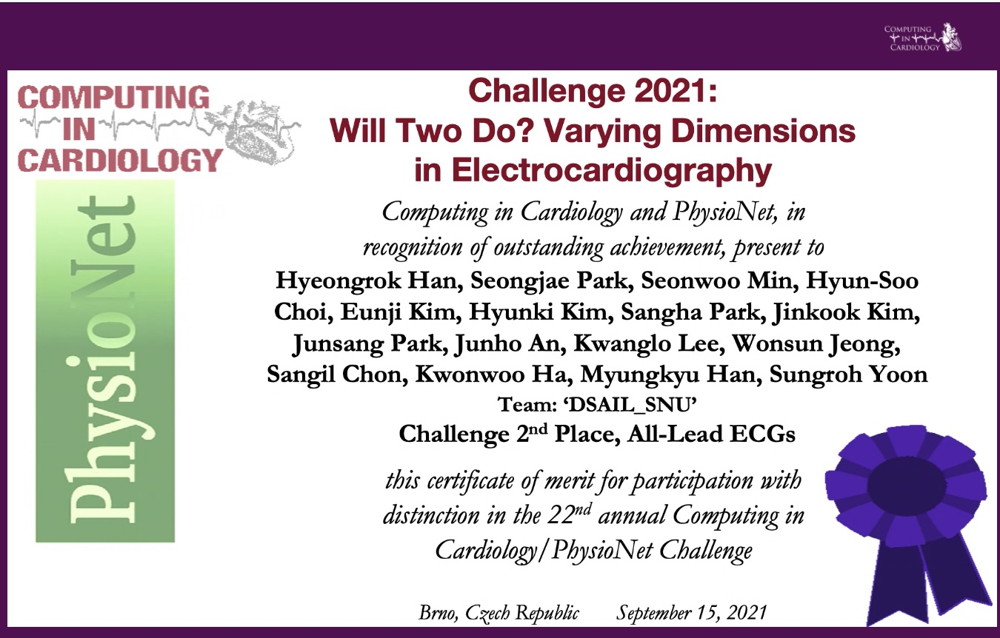

Award
CinC & PhysioNet Challenge 2021
Keywords -
Knowledge distillation,Multi-label classification,Asymmetric loss,Mixup
ECG로부터 총 30개의 부정맥을 찾는 global 대회
12 leads signal 및 특정 subset leads 만을 사용해야 함 → 총 5개 부문
환자, 신호 특성 등이 다양한 dataset으로 bias되지 않은 model을 만들어야 함
1st prize : 3, 4 leads
2nd prize : 2, 6, 12 leads
ASMRM & ICMRI & JSMRM 2020
Title : Blended-transfer learning for cardiac CINE MRI.
Keywords -
Transfer learning,Catastrophic forgetting,Generalization

Sparse sensing으로 인한 image 품질 저하를 개선
Transfer learning을 통해 학습 가속화 및 model의 일반화 및 성능 향상
Catastrophic forgetting을 보완하는 blended-transfer learning 기법 제안
Training from scratch 기준 학습시간 100배 가속
Source data에 대한 성능 보존 및 Target data에 대한 성능 최대 8% 향상
KSIST 2019
Keywords -
Transfer learning,Generalization
- Sparse sensing으로 인한 image 품질 저하를 개선하는 연구
- Transfer learning을 통해 학습 가속화 및 model의 일반화 및 성능 향상
Patent
SYSTEM AND METHOD OF GENERATING MAGNETIC RESONANCE IMAGE USING DEEP ARTIFICIAL NEURAL NETWORK
DOI: https://doi.org/10.8080/1020200008807
Keywords -
3D reconstruction,Fourier transform
- 주어진 k-space data로부터 고품질 영상을 재구성하는 MRI 기법
- MR image는 xy-plane(
axial plane)의 resolution에 비해 z-axis resolution(thickness)이 상대적으로 sparse함. - axial plane보다 sagital or coronal plane를 재구성하여 고품질 영상을 재구성
- sparse sensing의 경우 신경망을 통해 성능을 크게 향상시킬 수 있음